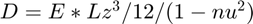

biharmdiag
Biharmonic coefficients of a diagonal band and block
Contents
Syntax
[d0,d1,dc,dM1,dM0] = biharmdiag(BCs,h,D,nu,dia)
Description
[d0,d1,dc,dM1,dM0] = biharmdiag(BCs,h,D,nu,dia) returns a 5-by-5 matrix of biharmonic coefficients where columns represents the diagonal blocks d0,d1,dc,dM1,dM0 for the diagonal given by dia
Example
%% second offset diagonal '-2Ny'
a0 = ones(Ny+1,1) ;
a1 = ones(Ny,1) ;
a2 = ones(Ny-1,1) ;
[~,~,dc,dM1,dM] = biharmdiag(BCs, h, D, nu,'-2ny');
dm2Ny0 = dc(3)*a0; dm2Ny0([1,2,Ny,Ny+1]) = [dc(1),dc(2),dc(end-1),dc(end)];
dm2Ny1 = dM1(3)*a0; dm2Ny1([1,2,Ny,Ny+1]) = [dM1(1),dM1(2),dM1(end-1),dM1(end)];
dm2Ny2 = dM(3)*a0; dm2Ny2([1,2,Ny,Ny+1]) = [dM(1),dM(2),dM(end-1),dM(end)];
Dm2Ny = [repmat(dm2Ny0,Nx-3,1);dm2Ny1;dm2Ny2];
Input Arguments
- BCs : 4-by-2 matrix of elastic boundary constants, in the order y0, x0, yL, xL
- h : Grid spacing
- D : Stiffness constant 
- nu : Poisson's ratio
- dia : String representing the offset of the diagonal Index of coefficient. Valid diagonals are ['-2ny','-ny-1', '-ny', '-ny+1', '-2', '-1', '0', '1', '2', 'ny-1', 'ny', 'ny+1','2ny']
Returns:
Outer coeffients diagonal blocks for the given dia will be filled with NaN values if they do not apply
- d0 : diagonal coefficient for index 0
- d1 : diagonal coefficient for index 1
- dc : diagonal coefficient for central points
- dM1 : diagonal coefficient for Ny - 1
- dM0 : diagonal coefficient for Ny
See Also
- bhmat